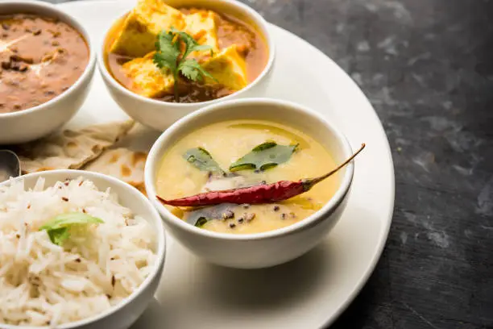
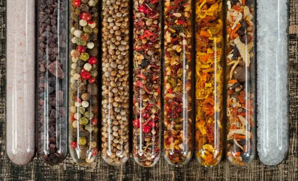
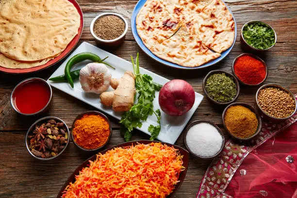

Stay updated with our freshest insights, innovative tips, and delicious discoveries. These are the articles currently sizzling on our blog, ready to inspire your next culinary masterpiece.

5 Types of Tadka You Didn’t Know Existed
By Chef Anjali | July 5, 2025 | #CookingTips #IndianCuisine
Tadka, or tempering, is the soul of Indian cooking, a technique that unlocks incredible aromas and flavors. But did you know there's more to tadka than just mustard seeds and curry leaves? This article delves into five unique and lesser-known types of tadka, each with its distinct flavor profile and application. From the subtle garlic tadka for dals to the fiery red chili tadka for vegetables, we explore how different combinations of spices, oils, and techniques can transform a simple dish into a culinary masterpiece. Learn how to master these variations and bring a new dimension of flavor to your everyday cooking. We'll cover the classic Hing-Jeera Tadka, the pungent Garlic-Chili Tadka, the aromatic Curry Leaf-Mustard Seed Tadka, the nutty Peanut Tadka, and the vibrant Onion-Tomato Tadka. Each type is explained with its ideal usage, ensuring you can apply these techniques confidently.
Read More
Why Your Curry Isn’t Hitting the Spot: Troubleshooting Common Issues
By Chef Rahul | June 28, 2025 | #CurryTips #FlavorEnhancement
Have you ever followed a curry recipe to the letter, only to find it lacking that authentic "oomph"? This article uncovers the common pitfalls that prevent your curry from reaching its full potential. We discuss crucial aspects like proper onion caramelization, the right order of adding spices, balancing acidity, and the importance of simmering for flavor development. Learn expert tips and tricks to troubleshoot your curry woes, ensuring every batch you make is rich, aromatic, and perfectly balanced. Say goodbye to bland curries and hello to a burst of authentic Indian flavors! We'll delve into topics such as undercooking onions, using stale spices, not deglazing the pan, and rushing the simmering process. Each point will be accompanied by practical solutions and visual cues to help you identify and correct these common mistakes.
Read More

Kitchen Hacks with Jeera, Rai & Hing: Beyond the Basics
By Foodie Priya | June 20, 2025 | #KitchenHacks #IndianSpices
Unlock the power of three essential Indian spices – Jeera (cumin), Rai (mustard seeds), and Hing (asafoetida) – with these ingenious kitchen hacks! This blog post goes beyond basic tempering, revealing creative ways to use these versatile spices to enhance flavor, aid digestion, and even simplify your cooking process. Discover how a pinch of hing can reduce flatulence from lentils, how toasted jeera powder can elevate raitas, and how mustard seeds can be used to make quick pickles. These practical tips will not only improve your cooking but also deepen your understanding of Indian culinary traditions. We'll share secrets for making your own roasted cumin powder, infusing oils with mustard seeds, and using hing as a natural flavor enhancer in vegetarian dishes.
Read More

The Science Behind a Good Tadka: A Deep Dive into Flavor Chemistry
By Dr. Spice | June 12, 2025 | #FoodScience #Tadka
Ever wondered why a tadka smells so incredible? This article dives into the fascinating chemistry behind the tempering process. We explore how heating oil or ghee to the right temperature, adding whole spices, and allowing them to crackle releases their volatile compounds, creating complex aromas and flavors. Understand the Maillard reaction, the role of fat in flavor extraction, and how different spices react to heat. This scientific exploration will give you a deeper appreciation for this fundamental Indian cooking technique and help you master the art of the perfect tadka every time. We'll discuss the optimal temperatures for different spices, the importance of fat as a flavor carrier, and how to prevent burning your spices for maximum aroma and taste.
Read More

A Culinary Journey: Exploring India's Regional Flavors
By Culinary Explorer | May 30, 2025 | #RegionalFood #IndianDiversity
India is a land of incredible culinary diversity, with each region boasting its unique flavors, ingredients, and cooking techniques. This article takes you on a mouth-watering journey across the country, from the rich, creamy curries of the North to the tangy, spicy delights of the South, and the subtle, seafood-rich dishes of the East and West. Discover the distinct characteristics of Punjabi, Bengali, Gujarati, Maharashtrian, South Indian, and Northeastern cuisines. Learn about the staple ingredients, signature dishes, and cultural influences that shape the food of each region. This exploration will not only expand your culinary horizons but also deepen your appreciation for India's gastronomic heritage.
Read More
Healthy Indian Cooking: Debunking Myths and Embracing Wellness
By Nutritionist Neha | May 22, 2025 | #HealthyEating #IndianDiet
Indian food often gets a bad rap for being heavy or unhealthy, but that couldn't be further from the truth! This article debunks common myths about Indian cuisine and highlights its inherent health benefits. We explore how traditional Indian cooking emphasizes fresh, seasonal ingredients, a balanced use of spices for medicinal properties, and wholesome cooking methods. Learn how to make your favorite Indian dishes healthier without compromising on flavor, by making smart choices with oils, portion sizes, and cooking techniques. Discover the power of lentils, vegetables, and whole grains in Indian meals, and embrace a healthier way of enjoying your favorite desi flavors.
Read More